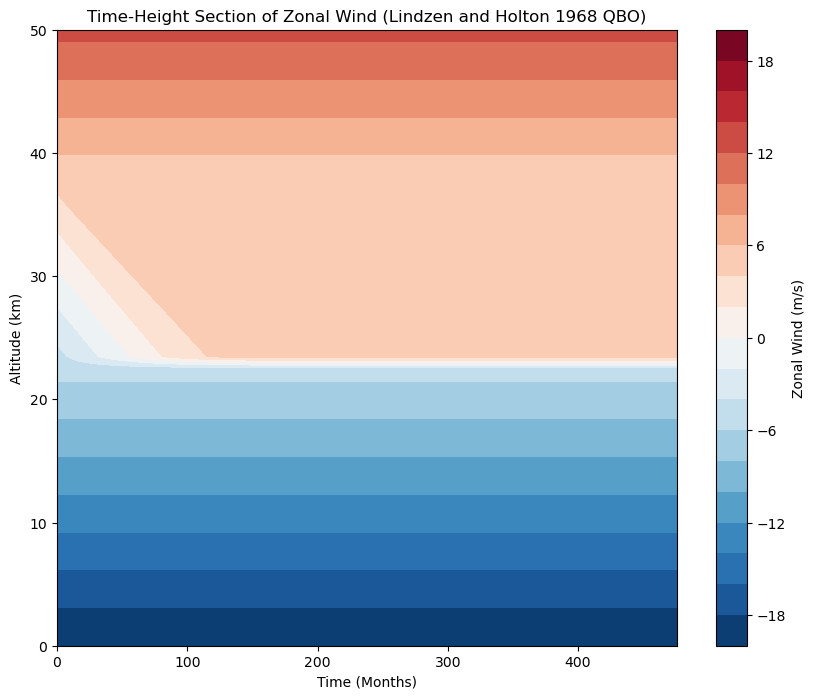
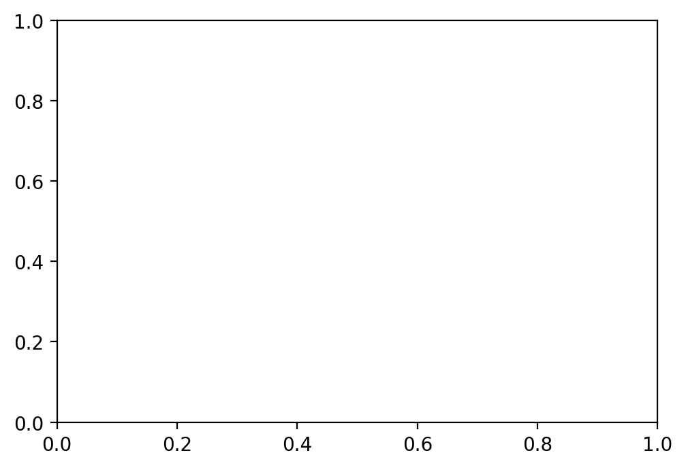

Contents
import numpy as np
import matplotlib.pyplot as plt
# Model parameters
z_levels = 50 # Number of vertical levels
dz = 1000 # Vertical spacing (1 km in meters)
dt = 86400 # Time step in seconds (1 day)
time_steps = 30*12*5 # Total time steps for 3 years
# Initial conditions
A = -20 # Initial zonal wind offset (m/s)
B = 2 / 3 # Gradient of initial zonal wind (m/s per km)
c_r = 5 # Phase speed cutoff (m/s)
rho_0 = 1.2 # Reference density (kg/m^3)
f_const = -rho_0 * 1000/86400/30 # Factor for f(U), as per paper
# Initialize arrays for mean zonal wind and height
U = A + B * np.arange(z_levels) * dz / 1000 # Initial zonal wind profile
output_intervals = [] # Store wind profiles for each time interval
# Define wave forcing function f(U) based on Lindzen and Holton (1968)
def wave_forcing(U, c_r, f_const):
f_U = np.zeros_like(U)
mask = (np.abs(U) < c_r) # Condition -cr < U < cr
f_U[mask] = f_const # Apply constant value for -cr < U < cr
return f_U
# Time integration loop
for t in range(time_steps):
# Calculate wave forcing f(U) for the current U profile
f_U = wave_forcing(U, c_r, f_const)
# Update the mean zonal wind profile
for k in range(1, z_levels - 1):
dU_dz = (U[k+1] - U[k]) / (dz) # Central difference for dU/dz
U[k] += dt * (-f_U[k] * dU_dz / rho_0) # Update U based on Eq. (14)
# Store results every 4 months (about 120 days)
if t % 15 == 0:
output_intervals.append(U.copy())
# Convert to a 2D array for plotting
zonal_wind_time_height = np.array(output_intervals)
time = np.arange(0, len(output_intervals) * 4, 4) # Time in months
altitude = np.linspace(0, z_levels * dz, z_levels) / 1000 # Altitude in km
# Plotting the time-height section of the zonal wind
plt.figure(figsize=(10, 8))
plt.contourf(time, altitude, zonal_wind_time_height.T, levels=np.linspace(-20, 20, 21), cmap='RdBu_r')
plt.colorbar(label='Zonal Wind (m/s)')
plt.xlabel('Time (Months)')
plt.ylabel('Altitude (km)')
plt.title('Time-Height Section of Zonal Wind (Lindzen and Holton 1968 QBO)')
plt.show()
def colorFader(c1,c2,mix=0): #fade (linear interpolate) from color c1 (at mix=0) to c2 (mix=1)
c1=np.array(mpl.colors.to_rgb(c1))
c2=np.array(mpl.colors.to_rgb(c2))
return mpl.colors.to_hex((1-mix)*c1 + mix*c2)
# plt.figure(figsize=(10, 8))
# for i in range(0,120,4):
# #print(i)
# plt.plot(zonal_wind_time_height[i,:],altitude)
# #plt.colorbar(label='Zonal Wind (m/s)')
# #plt.xlabel('Time (Months)')
# plt.ylabel('Altitude (km)')
# plt.xlim([-10,10])
# plt.title('Time-Height Section of Zonal Wind (Lindzen and Holton 1968 QBO)')
# plt.show()
mm = 1/25.4 # millimeters in inches
fig = plt.figure(figsize=(2*70*mm,2*50*mm), dpi=200) # create a figure object
fig.subplots_adjust(left=0.1, right=0.9, top=0.9, bottom=0.15)
ax = fig.add_subplot(1, 1, 1) # create an axes object in the figure
def colorFader(c1,c2,mix=0): #fade (linear interpolate) from color c1 (at mix=0) to c2 (mix=1)
c1=np.array(mpl.colors.to_rgb(c1))
c2=np.array(mpl.colors.to_rgb(c2))
return mpl.colors.to_hex((1-mix)*c1 + mix*c2)
c1='red' #blue
c2='blue' #green
n = 30
x = np.linspace(0,3*np.pi,100)
for i in range(0,n,3):
#ax.plot(x,i*np.sin(x),color=colorFader(c1,c2,i/n),linewidth = 1)
ax.plot(zonal_wind_time_height[i,:],altitude,color=colorFader(c1,c2,i/n),linewidth = 1,label='lead='+str(i*0.5)+'month')
ax.legend()
ax.set_xlabel('Wind relative to 20m/s')
ax.set_ylabel('Altitude(km)')
fig.savefig('QBO_model.png')

---------------------------------------------------------------------------
NameError Traceback (most recent call last)
Cell In [1], line 91
87 x = np.linspace(0,3*np.pi,100)
89 for i in range(0,n,3):
90 #ax.plot(x,i*np.sin(x),color=colorFader(c1,c2,i/n),linewidth = 1)
---> 91 ax.plot(zonal_wind_time_height[i,:],altitude,color=colorFader(c1,c2,i/n),linewidth = 1,label='lead='+str(i*0.5)+'month')
92 ax.legend()
93 ax.set_xlabel('Wind relative to 20m/s')
Cell In [1], line 80, in colorFader(c1, c2, mix)
79 def colorFader(c1,c2,mix=0): #fade (linear interpolate) from color c1 (at mix=0) to c2 (mix=1)
---> 80 c1=np.array(mpl.colors.to_rgb(c1))
81 c2=np.array(mpl.colors.to_rgb(c2))
82 return mpl.colors.to_hex((1-mix)*c1 + mix*c2)
NameError: name 'mpl' is not defined

!pwd
/Users/kaichiht/Library/CloudStorage/GoogleDrive-kuiper2000@gmail.com/.shortcut-targets-by-id/1uVpeHK5_xP9R6OFiq9ScJpGweQg4aL3c/tropical-dynamics-figures